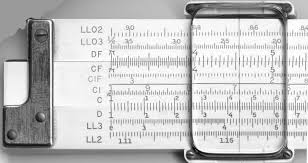
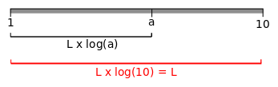
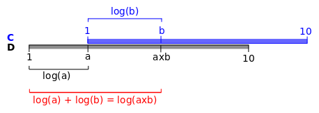
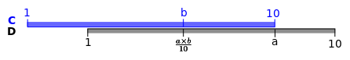
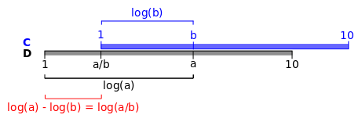

La regla de cálculo
logarítmica
(Slide rule)
Hui-zi dijo a Zhuang-zi: La doctrina de su Merced no es útil para nada
Zhuang-zi le contestó: Sólo cuando se conoce la inutilidad puede comenzarse a hablar de utilidad
Zhuang-zi, siglo IV A.C.
Al percibir la sutil utilidad de lo inutil, el hombre entra en el reino del arte
Kakuzo Okakura, El libro del té, 1906
Consideramos a las matemáticas como una herramienta muy útil, pero en realidad son puro placer intelectual, y muchos de sus logros se generan desde la emoción y desde el desafío que nos supone resolver cuestiones aparentemente inútiles
Josep Manel Marrasé, 'La belleza de las matemáticas'Logaritmos
$x = log_{10}(a) \Leftrightarrow a = 10^x$
$log(a \times b) = log(a) + log(b)$
$log(\frac{a}{b}) = log(a) - log(b)$
$log_{10}(10^n) = n$
$log(1) = 0$
$log(a^n) = n\times log(a)$
Construcción de la regla de cálculo
Multiplicación con las escalas C y D
Fundamento teórico: suma de segmentos
Se coloca el 1 de la escala C sobre el primer factor de la escala D y se lee el resulado en la escala D bajo el segundo factor de la escala C
Ejemplo de multiplicación
$0.025 \times 1500 $
Podemos hacer : $2.5 \times 10^{-2} \times 1.5 \times 10^3 = 2.5 \times 1.5\times 10^1$
En la regla operamos $2.5 \times 1.5 = 3.75$
El resultado final será:
$3.75 \times 10^1 = 37.5$
Multiplicación con el 10 de la escala C
Cuando situando el 1 de la escala C sobre el primer factor en la escala D, se nos sale por la derecha el segundo factor, se coloca 10 de la escala C sobre el primer factor en D y se lee el resultado bajo el 1 de la escala C
Si el resultado lo leemos bajo el 1 de la escala C, el resultado obtenido está dividido por 10
Ejemplo de multiplicación con el 10 de la escala C
$0.025 \times 4500 $
Podemos hacer : $2.5 \times 10^{-2} \times 4.5 \times 10^3 = 2.5 \times 4.5\times 10^1$
En la regla operamos: $2.5 \times 4.5 = 1.125 \times 10 = 11.25$
El resultado final será:
$11.25 \times 10^1 = 112.5$
Número de cifras enteras del resultado: regla práctica
El número de cifras enteras del resultado es la suma de las de los operandos, menos una si se utiliza el 1 de la escala C
- 123 = 3 cifras enteras
- 0.123 = 0 cifras enteras
- 0.00123 = -2 cifras enteras
Multiplicación con las escalas C y D
Procedimiento operativo
Se van multiplicando las cifras ajustadas al intérvalo entre 1 y 10, llevando la cuenta de las veces que se utiliza el 1 de la escala C para calcular el producto
El número de cifras enteras del producto es la suma de las cifras enteras de los operandos menos 1 multiplicado por el número de veces que se haya utilizado el 1 de la escala C para calcular el producto
Ejemplo de multiplicación con las escalas C y D
$\mathbf{2.3 \times 0.0045 \times 1200}$
Se opera $ 2.3 \times 4.5 \times 1.2$
El resultado es $1.24$ y se utiliza una vez el $1$ de la escala C
El número de cifras enteras del resultado: $1 - 2 + 4 -1 \times (1) = 2$
El resultado final es:
$\mathbf{12.4}$
División con las escalas C y D
División con las escalas C y D
Si el divisor es menor que el dividendo, el resultado bajo el 1 de la escala C
Si el divisor es mayor que el dividendo, el resultado bajo el 10 de la escala C y multiplicado por 10
Número de cifras enteras de la división
El numero de cifras enteras de la división serán las del dividendo menos las del divisor, sumando una cifra si el resultado se obtiene bajo el 1 de la escala C
Ejemplo de división
$\frac{0.4}{25}$
Operando potencias de diez:
$\frac{0.4}{25} = \frac{4 \times 10^{-1}}{2.5 \times 10^1} = \frac{4}{2.5} \times 10^{-2} = 1.6 \times 10^{-2} = 0.016$
Calculando cifras enteras del resultado:
En la regla: $\frac{4}{2.5} = 1.6$
Número de cifras enteras: $0 - 2 + 1 = -1$
Resultado: $0.016$
Cronología de la regla de cálculo
- 1617 - John Napier inventa los "logos" + "arithmos"
- 1622 - William Oughtred inventa la regla de cálculo
- 1657 - Seth Partridge desarrolla la reglilla deslizante
- 1675 - Isaac Newton propone utilizar el cursor
- 1722 - John Warner: escalas de cuadrados y cubos
- 1815 - Peter Roget inventa la escala log-log
- 1851 - Amedeé Mannheim estandariza escalas A,B,C,D
- 1870 - Dennert and Pape (makers of Aristo), and Faber (later Faber-Castell).
- S XX - Incorporación nuevas escalas, mejora en la precisión
Ingeniería con regla de cálculo
- Máquina de vapor (1775)
- Torre Eiffel (1889)
- Empire State Building (1931)
- Presa Hoover (1936)
- Golden Gate (1937)
- Bomba atómica (1945)
- Redstone Rocket (1958)
- Misiones Apollo (1969-1970)
- F-16 (1970-1978)

Características únicas de la regla de cálculo
- Simplicidad elegante
- Dimensiones armónicas
- Total transparencia
- Rango y precisión ingeniería
- Fácil de aprender y de operar
- Computación paralela
- Herramienta didáctica
THE END
BY Santiago Higuera
http://shiguera.github.io/sliderule
Esta obra está bajo una Licencia
Creative Commons Atribución-NoComercial-CompartirIgual
3.0 Unported